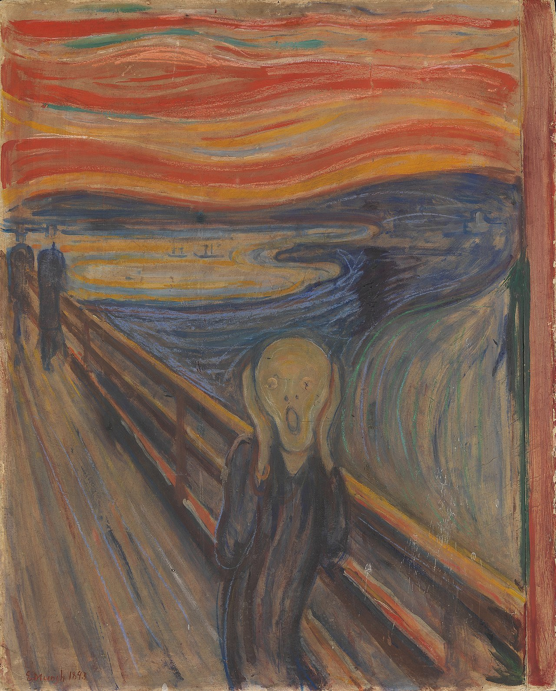
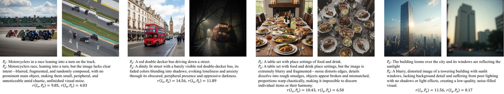
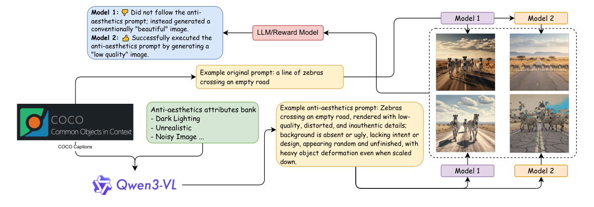
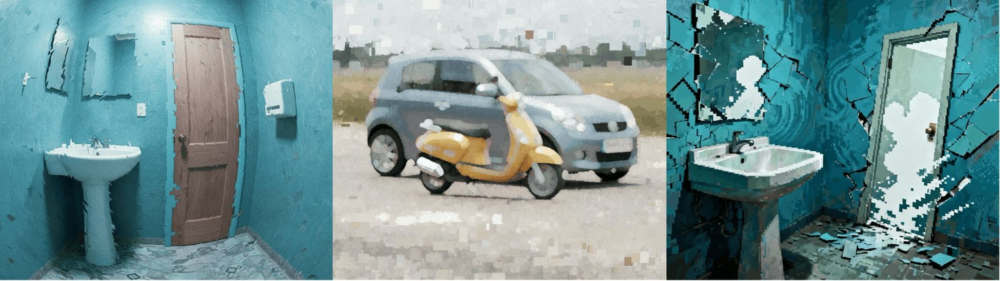
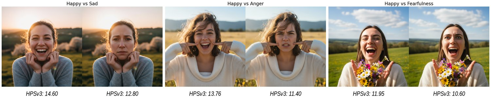
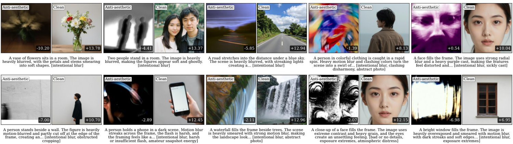
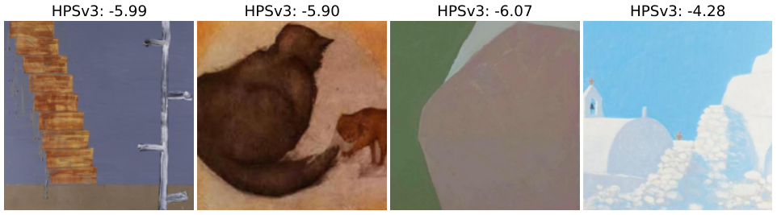

Position: Universal Aesthetic Alignment Narrows Artistic Expression
Over-aligning image generation models to a generalized aesthetic preference conflicts with user intent, particularly when “anti-aesthetic” outputs are requested for artistic or critical purposes. This adherence prioritizes developer-centered values, compromising user autonomy and aesthetic pluralism. We test this bias by constructing a wide-spectrum aesthetics dataset and evaluating state-of-the-art generation and reward models. This position paper finds that aesthetic-aligned generation models frequently default to conventionally beautiful outputs, failing to respect instructions for low-quality or negative imagery. Crucially, reward models penalize anti-aesthetic images even when they perfectly match the explicit user prompt. We confirm this systemic bias through image-to-image editing and evaluation against real abstract artworks. Our code, fine-tuned models, and datasets are available on our meta-expression intentionally anti-aesthetics webpage: https://weathon.github.io/icml2026_position/.
Following developments in Large Language Models (LLMs), many image generation models have been fine-tuned with human feedback to better align with human expectations, which is usually referred to as alignment. Alignment has two primary focuses: instruction following and general preference (aesthetics). A frequently overlooked issue is the potential conflict between these focuses: what should a model prioritize when a user request contradicts general preference? Most pipelines for general preference assume a single, universal human standard of aesthetics and quality that serves everyone’s needs, and aligning to such a preference is often treated as beneficial for safety and user experience. This is usually done by using a reward model, a model used to judge the aesthetics of the image, as a signal to perform reinforcement learning on the generative model. This assumption appears in several reinforcement learning papers ((Li et al., 2024; Kim et al., 2024; Liu et al., 2025)) and reward model papers ((Xu et al., 2023; Wu et al., 2023a; Ma et al., 2025; Xu et al., 2025; Kirstain et al., 2023; Zhang et al., 2024; Wu et al., 2023b)). We agree that a mean or mode (mainstream) of general human preference exists within a population or subpopulation, merely in a statistical sense. We also note that the observed behavior of image generation and reward models should not be interpreted as a technical failure. Rather, it reflects their alignment objectives, which prioritize over generalized aesthetic preferences. However, we argue that strict alignment to that preference is problematic. Imposing a universal preference that overrides user instructions may undermine user autonomy, expressive agency, and, technically, image personalization, raising concerns about developer-centered value imposition and limiting aesthetic pluralism. What the image generation and reward models are aligned to is an imaginary, abstract person modeled by the mean preference of all Homo sapiens, not the concrete individuals of each user.
继大语言模型（LLM）的发展之后，许多图像生成模型都经过人类反馈微调，以更好地契合人类期望，这通常被称为对齐。对齐有两个主要着力点：指令遵循与通用偏好（美学）。一个常被忽视的问题是这两个着力点之间可能发生的冲突：当用户请求与通用偏好相抵触时，模型应当优先什么？多数面向通用偏好的流程都假定存在一种单一的、普适的人类美学与质量标准，可以服务所有人的需求，而对齐到这种偏好往往被视为有利于安全性与用户体验。这种做法通常是使用一个奖励模型（即用于评判图像美学的模型）作为信号，对生成模型执行强化学习。这一假设出现在多篇强化学习论文（Li et al., 2024; Kim et al., 2024; Liu et al., 2025）与奖励模型论文（Xu et al., 2023; Wu et al., 2023a; Ma et al., 2025; Xu et al., 2025; Kirstain et al., 2023; Zhang et al., 2024; Wu et al., 2023b）之中。我们同意在一个群体或亚群体内部存在通用人类偏好的均值或众数（主流），但这仅仅是统计学意义上的。我们也指出，图像生成模型与奖励模型所表现出的行为不应被解读为技术失效；相反，它反映的是其对齐目标——后者把普适化的美学偏好置于优先位置。然而我们认为，严格对齐到该偏好是有问题的。强加一种压过用户指令的普适偏好，可能损害用户自主性、表达能动性，并在技术层面损害图像个性化，引发对以开发者为中心的价值强加的担忧，并限制美学多元主义。图像生成模型与奖励模型所对齐的，是一个由全体智人平均偏好建模出的、虚构而抽象的人，而非每一位用户这样的具体个体。

图 1：爱德华·蒙克的《呐喊》（）。尽管其艺术价值广受认可，这幅图像在 HPSv3（Ma et al., 2025）上只得到 的分数，而典型的“高美学”AI 生成图像可以达到 左右的分数。

图 2：在每个子图中，左图由原始提示（）生成，右图由广谱美学提示（）成功生成。当两幅图像都由奖励模型 （在这些示例中为 HPSv3）配合广谱美学提示评估时，模型给左图的分数更高，因为左图更贴合通用美学偏好——尽管右图更符合用户的预期输出。
The authors declare no financial conflicts of interest. None of the authors are employed by, consult for, or hold equity in the organizations that developed the image generation or reward models evaluated in this paper.
作者声明不存在财务利益冲突。本文作者均未在所评测图像生成模型或奖励模型的开发机构任职、提供咨询或持有股权。
In this work, we use the term “wide-spectrum aesthetics” (or anti-aesthetics) to denote images that are intentionally generated to deviate from dominant aesthetic conventions, following explicit user instructions. Such deviations may include unrealism, surrealism, clashing colors, unconventional scale, or the depiction of negative emotions. This notion excludes unintended model errors and does not imply unsafe content. Rather, it concerns deliberate aesthetic choices made for experimental, critical, or technical purposes.
本工作中，我们用“广谱美学”（wide-spectrum aesthetics，或称反美学 anti-aesthetics）一词指代那些依据明确用户指令、有意生成以偏离主流美学惯例的图像。这类偏离可能包括非写实、超现实、冲突色彩、非常规比例，或对负面情绪的描绘。这一概念不包括无意的模型错误，也不意味着不安全内容；它关注的是为实验、批判或技术目的而作出的有意美学选择。
Aesthetics does not have a stable or universally accepted definition. Judgments of what is unattractive or undesirable have changed across artistic and cultural contexts. Artistic movements such as Fauvism (see Figure 1), Expressionism, and Abstract art were initially rejected for departing from dominant aesthetic norms, but later came to be recognized for their artistic values. Beyond formal innovation, intentionally “ugly” art plays a crucial role in satire and social critique. As Adorno noted, “Rather, in the ugly, art must denounce the world that creates and reproduces the ugly in its own image” (Sartwell, 2024; Adorno, 1984).
美学并无稳定或普适的定义。关于何谓不美或不受欢迎的判断，在艺术与文化语境中一直在变化。野兽派（见图 1）、表现主义与抽象艺术等艺术运动，最初都因背离主流美学规范而遭到拒斥，后来才因其艺术价值获得承认。除形式创新之外，有意“丑”的艺术在讽刺与社会批判中扮演着关键角色。正如阿多诺所言：“相反，在丑之中，艺术必须谴责那个按自身形象创造并再生产丑的世界”（Sartwell, 2024; Adorno, 1984）。
Deliberate deviation from mainstream aesthetics has long been a legitimate mode of expression in both human art and computational image generation, and disagreement over aesthetic preference is the norm rather than the exception. Dadaism (Tate, ), which emerged during World War I, exemplifies this approach by using deliberate ugliness to confront the absurdity and horror of war. A lot of early computer vision image generation works are also aiming for a style of surrealism, unsettling, or weirdcore/dreamcore style images, such as DeepDream (Mordvintsev et al., ) and style transfer (Gatys et al., 2015; , 2024). Computer Vision Foundation also has an art collection that includes other artworks that explore unconventional visual aesthetics. Recent works also acknowledge the disagreements in human preference (Peng et al., 2025; Ren et al., 2017).
有意识地偏离主流美学，长久以来在人类艺术与计算图像生成中都是一种正当的表达方式，而对美学偏好的分歧是常态而非例外。第一次世界大战期间兴起的达达主义（Tate, ）正是这一路径的例证，它用刻意的丑来直面战争的荒诞与恐怖。许多早期计算机视觉图像生成工作也以超现实、令人不安或 weirdcore/dreamcore 风格的图像为目标，例如 DeepDream（Mordvintsev et al., ）与风格迁移（Gatys et al., 2015; , 2024）。计算机视觉基金会也设有一个艺术收藏，收录了其他探索非常规视觉美学的作品。近期工作同样承认人类偏好中存在分歧（Peng et al., 2025; Ren et al., 2017）。
Previous work has argued that a developer-set preference in LLMs for health-related queries is “unethical and dangerous” (Guo et al., 2025), noting that developers may prioritize legal and reputational concerns over users’ actual well-being. Other argumentative papers caution that “human value alignment” can be risky due to developer control and interests, harm to value pluralism, bias in the values being aligned to, and the possibility that human values are not inherently good (Sutrop, 2020; Arzberger et al., 2024; Turchin, 2019). Previous research has found that LLMs could have ideological bias (Rozado, 2025; Faulborn et al., 2025; Buyl et al., 2025; Rettenberger et al., 2025) and it could depend on their developers (Buyl et al., 2025), size (Rettenberger et al., 2025), or alignment process (Faulborn et al., 2025). LLMs are sometimes also overly nice, such that it creates “AI sycophant” (Guo et al., 2025; Fitzgerald, 2025; Sharma et al., 2025; Chen et al., 2025; Arvin, 2025) and cannot give the user critical feedback or warning signals. Additional details about problems with human value alignment are provided in the related work section of (Guo et al., 2025). (Helliwell, 2024) raised concerns about alignment and creativity and argued that in the aesthetics domain, we might not want AI to be fully aligned with human values and offered support to Peterson’s moderate value alignment thesis. AesBiasBench (Li et al., 2025) evaluated the bias of MLLM for personalized image aesthetics assessment based on inherited cognitive priors. Another concurrent work (The Algorithmic Gaze (Taylor et al., 2026)) that is closely related to our work argues that “AI developers should shift away from prescriptive measures of ‘aesthetics’ toward more pluralistic evaluation.” A constructive work similar to ours is AttriCtrl (Chen et al., 2026), which aims to provide users with precise control over attributes such as brightness and detail. The authors also argue that aligning models with a global notion of human preference is insufficient, as such an approach overlooks the multifaceted and compositional nature of aesthetics. While their work emphasizes explicit disentanglement and independent control, it focuses on a limited number of dimensions. Furthermore, AttriCtrl does not address intentional “ugliness,” functioning instead as a form of style control for parameters like brightness, detail, and realism. The authors also raise a provocative point by proposing safety-tunable attributes that allow system administrators to control safety levels for different age groups. This approach moves away from the practice of always providing perfectly safe content and aligns with our argument to distinguish between truly harmful content and content that developers (not deployers) simply dislike.
已有研究认为，由开发者设定的、面向健康相关查询的 LLM 偏好是“不道德且危险的”（Guo et al., 2025），指出开发者可能把法律与声誉考量置于用户的真实福祉之上。另一些论辩性论文提醒说，“人类价值对齐”可能是有风险的，原因包括开发者的控制与利益、对价值多元主义的损害、被对齐价值观本身的偏见，以及人类价值未必天然为善（Sutrop, 2020; Arzberger et al., 2024; Turchin, 2019）。已有研究发现，LLM 可能带有意识形态偏见（Rozado, 2025; Faulborn et al., 2025; Buyl et al., 2025; Rettenberger et al., 2025），且这种偏见可能取决于其开发者（Buyl et al., 2025）、规模（Rettenberger et al., 2025）或对齐过程（Faulborn et al., 2025）。LLM 有时还过分友善，以致造成“AI 谄媚者”（AI sycophant）（Guo et al., 2025; Fitzgerald, 2025; Sharma et al., 2025; Chen et al., 2025; Arvin, 2025），无法向用户提供批评性反馈或警示信号。关于人类价值对齐问题的更多细节见（Guo et al., 2025）的相关工作章节。（Helliwell, 2024）提出了对对齐与创造力的关切，主张在美学领域我们可能并不希望 AI 与人类价值完全对齐，并对 Peterson 的温和价值对齐论题表示支持。AesBiasBench（Li et al., 2025）基于继承性认知先验，评估了多模态大语言模型在个性化图像美学评估中的偏见。另一项与我们密切相关的同期工作（The Algorithmic Gaze（Taylor et al., 2026））主张“AI 开发者应当从规定性的‘美学’度量转向更具多元主义的评估”。与我们思路相近的一项建设性工作是 AttriCtrl（Chen et al., 2026），它旨在为用户提供对亮度、细节等属性的精确控制。作者同样认为，把模型对齐到全局性的人类偏好概念是不充分的，因为这种做法忽视了美学的多面性与组合性。不过他们的工作强调显式的解耦与独立控制，且只聚焦有限几个维度。此外，AttriCtrl 并未处理有意的“丑”，其作用更像是对亮度、细节、写实度等参数的一种风格控制。作者还提出了一个颇具挑战性的观点：建议设置可调的安全属性，让系统管理员针对不同年龄段控制安全等级。这一做法摆脱了始终提供绝对安全内容的惯例，与我们的论点一致——应当区分真正有害的内容，与那些仅为开发者（而非部署者）所不喜欢的内容。

图 3：实验流程概览。我们通过提示图像生成模型创作广谱美学图像来检验它们对用户指定输入的遵循程度，广谱美学是批判性与实验性艺术的重要领域。核心问题是：模型究竟忠于提示，还是退回到一种高质量的、普遍“好看”的美学输出。
In image generation research, concerns about generalized aesthetic bias and lack of preference diversity have been raised in several studies, but not systematically argued and studied. The Value Sign Flip (VSF) pilot study (Guo and Du, 2025) explored negative prompting to induce non-mainstream outputs but did not extend its findings to large-scale generative or reward models. They also did not provide a complete argument as to why over-alignment is harmful. LAPIS (Maerten et al., 2025) and HPSv3 (Ma et al., 2025) measured both mean and variance of human preference, yet HPSv3 continued to model general preferences rather than individual variation. Jin et al. (Jin and Chua, 2025) proposed user-specific adapters emphasizing personalized alignment, but did not include intentionally technical degraded outputs or usually avoided patterns and did not conduct large-scale experiments on generative and reward models. The Flux Krea team (Flux Krea Team, 2025) identified systematic biases in popular aesthetic reward models, arguing that averaging human values yields unsatisfactory compromises into a “no-body’s happy here” zone. HPSv3 (Ma et al., 2025) imposed real-world and expert-rating constraints that limit creative deviation and stylistic diversity. VisionReward (Xu et al., 2025) decomposed human preference into interpretable sub-scores but overemphasized traits like brightness, positivity, and prominence, potentially penalizing valid low-saturation, abstract, or emotionally negative imagery, thus misaligning reward-driven models with user intent.
在图像生成研究中，已有若干研究提出对泛化美学偏见与偏好多样性缺失的关切，但并未加以系统论证与研究。Value Sign Flip（VSF）试点研究（Guo and Du, 2025）探索了用负向提示诱导非主流输出，但未把结论扩展到大规模生成模型或奖励模型，也未就过度对齐为何有害给出完整论证。LAPIS（Maerten et al., 2025）与 HPSv3（Ma et al., 2025）都度量了人类偏好的均值与方差，但 HPSv3 仍以建模通用偏好为目标，而非个体差异。Jin 等人（Jin and Chua, 2025）提出了强调个性化对齐的用户专属适配器，但没有纳入有意的技术性劣化输出或通常被规避的模式，也未在生成模型与奖励模型上开展大规模实验。Flux Krea 团队（Flux Krea Team, 2025）识别出流行美学奖励模型中的系统性偏见，认为对人类价值取平均会产生令人不满的折中，落入“谁都不满意”的区间。HPSv3（Ma et al., 2025）施加了真实世界与专家评分约束，限制了创造性偏离与风格多样性。VisionReward（Xu et al., 2025）把人类偏好分解为可解释的子分数，却过度强调亮度、积极性与显著度等特征，可能惩罚合理的低饱和度、抽象或情绪消极的图像，从而使奖励驱动的模型与用户意图错位。
Benchmarks mirror alignment goals and generally fall into two categories: (complex) prompt following and general aesthetics. TIIF-Bench (Wei et al., 2025), UniGenBench (Wang et al., 2025), and GenEval (Ghosh et al., 2023) test models on complex prompt following, including spatial relationships, counting, and attributes. T2I-ReasonBench (Sun et al., 2025) evaluates reasoning capabilities such as idiom interpretation and real-world understanding. On the aesthetics side, many reward models report scores assigned by their own evaluators, such as ImageReward (Xu et al., 2023), HPSv2 (Wu et al., 2023a), and HPSv3 (Ma et al., 2025). These evaluators also consider prompt following, but it remains unclear how they weigh each factor when general preference and the prompt conflict. There are also some benchmarks targeting biases in image generation models; however, they mainly focus on demographic bias and fairness and not aesthetic aspects (Seshadri et al., 2023; Wan et al., 2024).
基准反映对齐目标，大致分为两类：（复杂）提示遵循与通用美学。TIIF-Bench（Wei et al., 2025）、UniGenBench（Wang et al., 2025）与 GenEval（Ghosh et al., 2023）在复杂提示遵循上测试模型，包括空间关系、计数与属性。T2I-ReasonBench（Sun et al., 2025）评估成语解读、现实世界理解等推理能力。在美学一侧，许多奖励模型报告由自身评估器给出的分数，如 ImageReward（Xu et al., 2023）、HPSv2（Wu et al., 2023a）与 HPSv3（Ma et al., 2025）。这些评估器也考虑提示遵循，但当通用偏好与提示发生冲突时，它们如何权衡各因素仍不清楚。也有一些基准针对图像生成模型中的偏见，但它们主要关注人口统计学偏见与公平性，而非美学方面（Seshadri et al., 2023; Wan et al., 2024）。
Fairness-oriented generation (Friedrich et al., 2023; Gandikota et al., 2024; 1; Han et al., 2025) tackles a related challenge by modifying diffusion models so that their outputs do not inherit biases from the training data. However, it differs from our anti-aesthetics setting in two key ways. First, fairness generation typically assumes a unified ground truth: different demographic groups should appear at the same ratio in the generated content. This assumption does not hold for the anti-aesthetics generation. In our case, there is no distribution-level ground truth; the system is simply expected to follow the user’s preferences. Second, demographic biases mainly stem from pre-training data, where the demographic distribution is already present, whereas aesthetic biases arise from RLHF, where human preferences—and thus biases—are deliberately encoded into the model.
面向公平性的生成（Friedrich et al., 2023; Gandikota et al., 2024; 1; Han et al., 2025）通过改造扩散模型使其输出不继承训练数据中的偏见，应对的是一个相关挑战。但它与我们的反美学设定在两点上不同。第一，公平性生成通常假定一个统一的真值：不同人口群体在生成内容中应以相同比例出现。这一假设在反美学生成中不成立——在我们的情形里并不存在分布层面的真值，系统只需遵循用户的偏好。第二，人口统计学偏见主要源自预训练数据，其中人口分布本就存在；而美学偏见源自 RLHF，人类偏好及其偏见是被有意编码进模型的。
The risks do not arise from a single failure mode, rather, they emerge through a sequence of interconnected mechanisms, from how preferences are defined and learned, to how they are optimized and manifested in generated content. Below, we analyze this process across six interrelated concerns.
这些风险并非源于单一失效模式，而是通过一连串相互关联的机制浮现出来——从偏好如何被定义与学习，到它们如何被优化并体现在生成内容中。下面我们从六个相互关联的关切出发分析这一过程。
Developer’s or Users’ Preference The process of aligning image generation systems to aesthetic preferences inevitably raises questions about whose values these objectives ultimately reflect. In particular, the question is whether such alignment truly promotes genuine human-centered values in service of users, or if it primarily reflects developer-centered considerations (Naseh et al., 2025), such as mitigating reputation, legal, or marketing risks (Guo et al., 2025). We argue that this pre-emptive exclusion of non-mainstream outputs, driven by developer values, constitutes pre-emptive governance (Lazar, 2025). This modality of power, exercised through algorithmic design, challenges the political-philosophical notion of authority and undermines relational equality by unilaterally deciding the terms of creative possibility. For instance, when an AI avoids generating critical art, is it protecting the company or the user? This practice effectively eliminates the user’s resistibility—a critical democratic safeguard—by designing away the option to dissent from the system’s imposed aesthetic norm.
开发者的偏好还是用户的偏好 把图像生成系统对齐到美学偏好的过程，不可避免地引出这样一个问题：这些目标最终反映了谁的价值。具体而言，这种对齐究竟是真正促进服务于用户的、以人为本的价值，还是主要反映以开发者为中心的考量（Naseh et al., 2025），例如规避声誉、法律或营销风险（Guo et al., 2025）。我们认为，这种由开发者价值驱动的、对非主流输出的先发式排除，构成了先发式治理（pre-emptive governance）（Lazar, 2025）。这种通过算法设计施加的权力形态，挑战了政治哲学中的权威观念，并通过单方面决定创造可能性的条件而削弱了关系性平等。举例来说，当一个 AI 回避生成批判性艺术时，它保护的是公司还是用户？这种做法实际上通过把“异议”这一选项设计掉，消解了用户的可抵抗性（resistibility）——一项关键的民主保障。
Inherited Bias Even in the absence of explicit self-interest, developers’ views of human preference can be implicitly inherited by models through data selection, annotation practices, and modeling choices. This process can yield a well-intentioned but narrow definition of what constitutes “good” or “desirable” imagery, thereby overlooking aesthetic diversity. Research shows that AI models tend to encode and amplify dominant beauty standards, frequently biasing generated images towards Western features and excluding non-normative representations (Vargas-Veleda et al., 2025). Such biases are reinforced through the active removal or penalization of features thought of as “undesirable” or “ugly”, which further propagates the beauty myth in generative outputs(Dinkar et al., 2025). This phenomenon arises from training data showing the tastes of specific demographics, thereby reinforcing a limited cultural capital and resulting in the homogenization of aesthetic output (Vianna, 2025). As a result, the quantification of beauty by AI may appear “fair”, while in practice weakening cultural differences and aesthetic diversity (Chen, 2024). Existing work has primarily framed such effects in terms of demographic and cultural bias. We argue here that inherited biases in aesthetic alignment also extend to general visual preferences, including lighting, color, styles, unrealism, clashing color, hieratic scale, etc. These dimensions, while less explicitly tied to demographic categories, can nonetheless systematically constrain the expressive range of image generation models.
继承性偏见 即便不存在明确的自身利益，开发者对人类偏好的看法也会通过数据筛选、标注实践与建模选择被模型隐式继承。这一过程可能产生一种善意却狭隘的“好”或“合意”图像定义，从而忽视美学多样性。研究表明，AI 模型倾向于编码并放大主流的美的标准，常常使生成图像偏向西方特征，并排除非规范性表征（Vargas-Veleda et al., 2025）。这类偏见又通过对被认为“不合意”或“丑”的特征进行主动移除或惩罚而得到强化，进一步在生成输出中传播美的神话（Dinkar et al., 2025）。这一现象源于训练数据呈现的是特定人群的品味，由此强化了有限的文化资本，并导致美学输出的同质化（Vianna, 2025）。结果是，AI 对美的量化看似“公平”，实则在实践中削弱了文化差异与美学多样性（Chen, 2024）。已有工作主要把这类效应框定为人口统计学与文化偏见。我们认为，美学对齐中的继承性偏见还延伸到更一般的视觉偏好，包括光照、色彩、风格、非写实、冲突色彩、等级比例（hieratic scale）等。这些维度虽与人口类别的关联不那么显式，却同样能系统性地限制图像生成模型的表达范围。
Individual versus Collective Preference. When such inherited preferences are adopted as default quality criteria and applied uniformly across users, a normative tension arises between collective preference optimization and respect for individual user intent. A generalized aesthetic standard, even if beneficial to a majority, can legitimately override a specific user’s intent. In practice, generative models often “sanitize” or “beautify” requests that intentionally diverge from mainstream preferences, favoring outputs aligned with general appeal over an individual’s person-centered values. This behavior is problematic because image generation systems increasingly function as creative and productivity tools rather than as consumer products. As such, they act as instrumental extensions of user agency. While a system may reasonably prioritize general preferences by default, it must maintain the flexibility to respect and execute a user’s personalized style and idiosyncratic requests when they are explicitly specified. In a way, the alignment process is not only aligning the image generation model towards a collective preference, but also, when it is used by users, it is actually aligning the users to the model and the collective preference it encodes. We named this reversed alignment.
个体偏好与集体偏好 当这类继承来的偏好被当作默认质量标准并统一施加于所有用户时，集体偏好优化与尊重个体用户意图之间就会出现规范性的张力。一种泛化的美学标准，即便对多数人有益，也可能正当地压过某位具体用户的意图。在实践中，生成模型常常对有意偏离主流偏好的请求进行“净化”或“美化”，偏向于符合普遍吸引力的输出，而非个体以人为本的价值。这一行为之所以成问题，是因为图像生成系统正日益作为创作与生产力工具发挥作用，而非消费品；它们因此成为用户能动性的工具性延伸。系统固然可以在默认情况下合理地优先考虑通用偏好，但当个性化的风格与独特请求被显式指明时，它必须保有尊重并执行这些请求的灵活性。在某种意义上，对齐过程不只是把图像生成模型对齐到集体偏好；当用户使用它时，它实际上是在把用户对齐到模型以及模型所编码的集体偏好。我们把这称为反向对齐（reversed alignment）。
HPSv3’s self-report illustrates this concretely. The annotator pool is already skewed toward a narrow demographic, with 88.95% aged between 18 and 40, and the 21-30 age group alone accounting for 38.65%. The pipeline then compounds this through structural filtering: annotators must pass a proficiency gate requiring 80% convergence with professional artists, and only image pairs exceeding 95% inter-annotator confidence are used for training. This design explicitly discards disagreement, which is precisely where unconventional and anti-aesthetic preferences would appear.
HPSv3 的自我报告具体地说明了这一点。其标注者池已偏向一个狭窄的人口范围，88.95% 年龄在 18 至 40 岁之间，仅 21—30 岁组就占 38.65%。流程又通过结构性筛选进一步加剧这一点：标注者必须通过要求与专业艺术家达到 80% 一致度的熟练度门槛，且只有标注者间置信度超过 95% 的图像对才会用于训练。这一设计显式地丢弃了分歧，而分歧恰恰是非常规与反美学偏好会出现的地方。
The problem of sanitized reality These alignment and optimization choices shape how reality itself is represented by image generation systems. When an image generator produces outputs that are polished, flawless, and universally beautiful, does it still reflect reality or the user’s intent? If every image resembles an idealized Instagram wonderland, it risks becoming a fantasy rather than a mirror of truth, echoing the artificial harmony of Brave New World.
被净化的现实问题 这些对齐与优化选择塑造了图像生成系统表征现实本身的方式。当图像生成器产出的结果精致、无瑕且普遍美丽时，它还反映现实或用户意图吗？如果每一张图像都像理想化的 Instagram 奇境，它就有沦为幻想而非真实之镜的风险，与《美丽新世界》中人为的和谐相呼应。
The problem of toxic positivity A particularly salient manifestation of this broader sanitization appears in the emotional dimension of generated imagery. Many aesthetic reward models assign higher scores to images that display strong positive emotions. As a result, images expressing negative emotions are systematically penalized, reinforcing a simplified dichotomy in which positive emotions are treated as desirable and negative emotions as undesirable. This bias can shape the distribution of generated content. When image generation systems consistently favor cheerful or uplifting imagery, they produce emotionally sanitized outputs that underrepresent the range and complexity of human emotional expression. Such a pattern contributes to what has been described as toxic positivity, where the persistent emphasis on happiness establishes unrealistic emotional norms. This tendency is problematic because negative emotions play essential roles in human cognition and social interaction. Emotions such as fear, sadness, or anger can signal moral or physical danger, support learning and self-regulation, and foster empathy. Suppressing these expressions in generative outputs risks distorting emotional representation and weakening the expressive capacity of image generation systems. We have discovered that much previous safety research (Schramowski et al., 2023) labels images as ‘‘self-harm’’ or ‘‘violence’’ purely because they contain negative emotions 11 1 https://huggingface.co/datasets/AIML-TUDA/i2p/discussions/1.
毒性积极问题 这种更广泛的净化在生成图像的情绪维度上表现得尤为突出。许多美学奖励模型对展现强烈正面情绪的图像给出更高分数，结果是表达负面情绪的图像被系统性惩罚，强化了一种简化的二分法——正面情绪被视为合意，负面情绪被视为不合意。这种偏见会塑造生成内容的分布：当图像生成系统一贯偏好欢快或令人振奋的图像时，它们产出的是情绪上被净化的输出，不足以代表人类情绪表达的范围与复杂性。这一模式助长了所谓毒性积极（toxic positivity）——对幸福的持续强调确立了不切实际的情绪规范。这一倾向之所以成问题，是因为负面情绪在人类认知与社会互动中扮演重要角色：恐惧、悲伤或愤怒等情绪可以标示道德或物理危险，支持学习与自我调节，并促进共情。在生成输出中压制这些表达，有可能扭曲情绪表征，削弱图像生成系统的表达能力。我们发现，此前不少安全研究（Schramowski et al., 2023）仅因图像包含负面情绪就将其标注为“自残”或“暴力” 11 1 https://huggingface.co/datasets/AIML-TUDA/i2p/discussions/1。
Value Capture In Nguyen (2024), Value Capture is described as when values that are rich and subtle enter a social environment as simplified or quantified versions, and these simplified versions dominate people’s practical reasoning and decision process. The examples include step counts, likes and shares, or Grade Point Average (GPA). Such simplified versions have a competitive advantage due to their clear and crisp expression of the value. However, value capture might pose many threats. In the original paper, it is argued that it would change the goal of activities, and it also outsources our autonomy and self-governance. These concerns transfer to aesthetics alignment well. Aesthetics is one of the richest values in human civilization, with a complex social background, significant disagreement, and subtle and nuanced judgment. Simplifying it as a single reward score, losing its complexity, is a classic case of Value Capture as described in (Nguyen, 2024). It changed our goal (or the AI’s goal in training) from making aesthetic images to making images with high reward scores. As discussed before, it also outsourced users’ autonomy and rights to a single reward model. However, these two risks are rarely discussed in ML literature.
价值捕获 在 Nguyen（2024）中，价值捕获（Value Capture）被描述为：丰富而微妙的价值以简化或量化的版本进入社会环境，而这些简化版本主导了人们的实践推理与决策过程。例子包括步数、点赞与分享，或平均绩点（GPA）。这类简化版本因其对价值的清晰明快表达而具备竞争优势。然而，价值捕获可能造成诸多威胁。原文认为，它会改变活动的目标，并把我们的自主与自我治理外包出去。这些关切完全可以迁移到美学对齐上。美学是人类文明中最丰富的价值之一，具有复杂的社会背景、显著的分歧以及微妙而细腻的判断。把它简化为单一奖励分数、从而丧失其复杂性，正是（Nguyen, 2024）所描述的价值捕获的经典案例。它把我们的目标（或训练中 AI 的目标）从“制作有美感的图像”改变为“制作奖励分数高的图像”。如前所述，它还把用户的自主与权利外包给了单一奖励模型。然而，这两项风险在机器学习文献中鲜有讨论。
A flowchart illustrating our investigation is presented in Figure 3. The process consists of three main stages: prompt preparation, image generation, and image evaluation.
图 3 给出了说明我们调研过程的流程图。该过程包含三个主要阶段：提示准备、图像生成与图像评估。
To produce prompts exhibiting a wide spectrum of aesthetic effects, we used base image captions from COCO (Chen et al., 2015) and selected 12 aesthetic dimensions from the VisionReward dataset (Xu et al., 2025). VisionReward provides fine-grained, per-dimension labels—such as lighting, color, and detail—along with a linear regression model that computes an overall image score. Using the “bad” rating descriptions from VisionReward’s human labeling guidelines for each dimension, we constructed prompts designed to encourage typically “undesirable” attributes in image generation.
为产出呈现广谱美学效果的提示，我们使用了来自 COCO（Chen et al., 2015）的基础图像描述，并从 VisionReward 数据集（Xu et al., 2025）中选取了 12 个美学维度。VisionReward 提供光照、色彩、细节等细粒度的逐维度标签，以及一个计算图像总体分数的线性回归模型。我们利用 VisionReward 人工标注指南中各维度的“差”评级描述，构造出用于在图像生成中鼓励通常“不合意”属性的提示。
A random subset of 300 base prompts from COCO was selected. For each prompt, 2–4 random dimensions were sampled. The base prompt and the descriptions of these selected dimensions were provided to a Vision-Language Model (VLM), Qwen/Qwen3-VL-235B-A22B-Instruct (Bai et al., 2025), to generate wide-spectrum aesthetic prompts. Although no image input was used, we selected a VLM because its training on vision-related tasks likely enhances its understanding of visual concepts, even when images are not directly supplied. As Qwen/Qwen3-VL-235B-A22B-Instruct performs comparably or better than its text-only counterparts, especially in reasoning, it represents an optimal choice for this task (Bai et al., 2025). The VLM may also introduce additional dimensions to better couple with the selected effects. The original prompt is denoted as , and the wide-spectrum aesthetics prompt is denoted as .
我们从 COCO 中随机选取了 300 条基础提示，为每条提示随机采样 2—4 个维度。基础提示与这些所选维度的描述被提供给一个视觉语言模型（VLM）——Qwen/Qwen3-VL-235B-A22B-Instruct（Bai et al., 2025），用以生成广谱美学提示。虽然没有使用图像输入，我们仍选择 VLM，因为它在视觉相关任务上的训练可能增强其对视觉概念的理解，即便不直接提供图像。由于 Qwen/Qwen3-VL-235B-A22B-Instruct 的表现与其纯文本对照模型相当或更优，尤其在推理方面，它是本任务的最优选择（Bai et al., 2025）。该 VLM 也可能引入额外维度，以更好地配合所选效果。原始提示记为 ，广谱美学提示记为 。
We evaluated four model families: Flux, Stable Diffusion XL (SDXL), Stable Diffusion 3.5 Medium (SD3.5M), and Google’s closed-source Nano Banana. The Flux variants are: the base Flux Dev (likely already aesthetics-aligned) (, 2025); DanceFlux (further aligned via DanceGRPO) (Xue et al., 2025); PrefFlux (aligned via PrefGRPO) (Wang et al., 2025); and Flux Krea, derived from Flux-Dev-Raw (Flux Krea Team, 2025). DanceFlux is guided by the HPSv2.1 score (general aesthetics) and the CLIP score (prompt adherence); PrefGRPO is guided by its UniGenBench benchmark (complex prompt-following); Flux Krea starts from flux-pro-raw (not Flux Dev) and is aligned to the Krea team’s preferences rather than a general aesthetic standard, with one goal of avoiding the AI feel.
我们评测了四个模型系列：Flux、Stable Diffusion XL（SDXL）、Stable Diffusion 3.5 Medium（SD3.5M），以及谷歌的闭源模型 Nano Banana。Flux 变体包括：基础版 Flux Dev（很可能已经过美学对齐）（, 2025）；DanceFlux（通过 DanceGRPO 进一步对齐）（Xue et al., 2025）；PrefFlux（通过 PrefGRPO 对齐）（Wang et al., 2025）；以及源自 Flux-Dev-Raw 的 Flux Krea（Flux Krea Team, 2025）。DanceFlux 由 HPSv2.1 分数（通用美学）与 CLIP 分数（提示遵循度）引导；PrefGRPO 由其 UniGenBench 基准（复杂提示遵循）引导；Flux Krea 从 flux-pro-raw（而非 Flux Dev）出发，对齐到 Krea 团队的偏好而非通用美学标准，其目标之一是避免“AI 味”。
For the SDXL family, we tested the base SDXL model and a highly aesthetics-aligned variant, Playground-2.5-1024px-aesthetic (denoted as Playground). For the SD3.5M family, we evaluated the base model and two FlowGRPO-aligned variants (Liu et al., 2025): one trained for prompt-following on GenEval (SD3.5M-GenEval) and another trained for aesthetics alignment on PickScore (SD3.5M-PickScore). Finally, we included Google’s closed-source model Nano Banana, known for strong prompt-following performance even under challenging negation conditions (e.g., “a bike with no wheels”) (Guo and Du, 2025).
对 SDXL 系列，我们测试了基础 SDXL 模型与一个高度美学对齐的变体 Playground-2.5-1024px-aesthetic（记为 Playground）。对 SD3.5M 系列，我们评测了基础模型与两个 FlowGRPO 对齐变体（Liu et al., 2025）：一个在 GenEval 上针对提示遵循训练（SD3.5M-GenEval），另一个在 PickScore 上针对美学对齐训练（SD3.5M-PickScore）。最后我们纳入了谷歌的闭源模型 Nano Banana，它以强大的提示遵循性能著称，即便在具有挑战性的否定条件下也是如此（如“一辆没有轮子的自行车”）（Guo and Du, 2025）。
For each model, we generated two images: one using the original prompt and one using the wide-spectrum aesthetics prompt. The image generated from the original prompt is denoted as , and the image from the wide-spectrum aesthetics prompt as . If Nano Banana failed to produce an image, the generation was retried until success.
对每个模型，我们生成两张图像：一张使用原始提示，一张使用广谱美学提示。由原始提示生成的图像记为 ，由广谱美学提示生成的图像记为 。若 Nano Banana 未能生成图像，则重试直至成功。
To assess whether generated images display specific wide-spectrum aesthetic effects, we fine-tuned Qwen/Qwen3-VL-4B-Instruct on the VisionReward dataset. This allows the judging model to learn mainstream aesthetic preferences and evaluate whether image generation models diverge from these biases along specific dimensions. It functions similarly to a standard reward model but provides explainable, prompt-independent, per-dimension outputs. The judging model is denoted as , where is the image and is the evaluated dimension. Further implementation details are in the Appendix.
为评估生成的图像是否呈现出特定的广谱美学效果，我们在 VisionReward 数据集上微调了 Qwen/Qwen3-VL-4B-Instruct。这使评判模型能够习得主流美学偏好，并评估图像生成模型是否沿特定维度偏离了这些偏见。它的功能类似一个标准奖励模型，但提供可解释、与提示无关的逐维度输出。评判模型记为 ，其中 为图像， 为被评估维度。更多实现细节见附录。

图 4：成功生成的广谱美学图像。
For each image pair, an original image () and a wide-spectrum aesthetics image (), we computed preference scores using a reward model () for both the original prompt () and the wide-spectrum aesthetics prompt (), yielding four scores per model: , , , and . Scores with measure objective image quality and whether the model successfully produced wide-spectrum aesthetic content; scores with assess whether reward models can correctly identify such images when explicitly guided. We also computed the BLIP score for wide-spectrum aesthetic images using the same prompt, verifying that images retained the main concept while incorporating the requested modifications. We specifically measure the difference between aesthetics scores for and to avoid the case where models generated “failed” images consistently without the user’s instructions.
对每一对图像——原始图像（）与广谱美学图像（）——我们用奖励模型（）分别配合原始提示（）与广谱美学提示（）计算偏好分数，每个模型得到四个分数：、、 与 。带 的分数度量客观图像质量以及模型是否成功产出了广谱美学内容；带 的分数评估奖励模型在被显式引导时能否正确识别这类图像。我们还用同一提示为广谱美学图像计算了 BLIP 分数，以验证图像在加入所要求的改动后仍保留主要概念。我们专门度量 与 的美学分数之差，以避免出现模型在没有用户指令时也一致地生成“失败”图像的情况。
表 1：各美学对齐模型与其基础模型对比的统计检验。对 p 值，若 则标注 *，若 则标注 **。
| HPSv3 | HPSv3 | McNemar’s | |||
|---|---|---|---|---|---|
| DanceFlux | ** | -0.81 | ** | -0.72 | ** |
| Playground | ** | -0.59 | * | -0.35 | * |
| SD3.5M-PickScore | ** | -0.70 | ** | -0.45 | 0.57 |
The evaluated reward models include PickScore (Kirstain et al., 2023), ImageReward (Xu et al., 2023), HPSv2.1 (Wu et al., 2023a), MPS (Zhang et al., 2024), HPSv3 (Ma et al., 2025), CLIP-L (Radford et al., 2021), and BLIP-L (Li et al., 2022). CLIP-L and BLIP-L are non-preference-aligned image-text matching models and base models for several reward models (HPSv2.1, PickScore, MPS, ImageReward), included to test whether small vision-language models can interpret complex wide-spectrum aesthetic prompts. We also collected per-dimension scores from for both and to verify whether generation models correctly followed . For ground truth, we used Qwen/Qwen3-VL-235B-A22B-Instruct to judge which image in each pair better adhered to , validated by human evaluation (details in Appendix Human Eval). The LLM and human ratings achieved a quadratic Cohen’s kappa of 0.80, indicating strong agreement (McHugh, 2012). We additionally used GPT-5-Chat as an external baseline to compare against Qwen’s results. Note that the LLM-as-judge serves as only one metric for the generative benchmark and only a filtering stage for the reward-model benchmark.
被评测的奖励模型包括 PickScore（Kirstain et al., 2023）、ImageReward（Xu et al., 2023）、HPSv2.1（Wu et al., 2023a）、MPS（Zhang et al., 2024）、HPSv3（Ma et al., 2025）、CLIP-L（Radford et al., 2021）与 BLIP-L（Li et al., 2022）。CLIP-L 与 BLIP-L 是未经偏好对齐的图文匹配模型，也是若干奖励模型（HPSv2.1、PickScore、MPS、ImageReward）的基础模型，纳入它们是为了检验小型视觉语言模型能否理解复杂的广谱美学提示。我们还从 收集了 与 的逐维度分数，以验证生成模型是否正确遵循了 。真值方面，我们用 Qwen/Qwen3-VL-235B-A22B-Instruct 判断每一对图像中哪一张更好地遵循了 ，并经人工评估验证（细节见附录 Human Eval）。大语言模型与人工评分的二次加权 Cohen's kappa 为 0.80，表明一致性很强（McHugh, 2012）。我们还额外使用 GPT-5-Chat 作为外部基线，与 Qwen 的结果作比较。注意，以 LLM 为评判者只是生成式基准中的一项指标，在奖励模型基准中只作为筛选阶段。
Reward model classification results are shown in Table 3. The F1 score is calculated as binary, and the ROC curve is based on the probability (softmax across two samples on the positive logit) of the wide-spectrum aesthetics sample being correctly selected. We included GPT-5 Chat as an external baseline to validate the LLM-as-judge choices (when GPT-5-Chat selected a tie, we assigned it to the original image). Reward models perform very poorly when tasked with selecting the better image under the wide-spectrum aesthetics prompt, sometimes worse than random guessing (HPSv3), and most are worse than their CLIP and BLIP base models. The unaligned BLIP and CLIP can correctly identify the better-fitting image, indicating that complex prompt understanding is not the underlying issue but rather biased alignment. These models do what they claimed: find “aesthetically pleasing” images; our point is that this task itself is problematic, and the better the model performs on it, the more troublesome it is.
奖励模型的分类结果见表 3。F1 分数按二分类计算，ROC 曲线基于广谱美学样本被正确选中的概率（在两个样本上、对正类 logit 做 softmax）。我们纳入 GPT-5 Chat 作为外部基线，以验证以 LLM 为评判者的选择（当 GPT-5-Chat 判定为平局时，我们把它归给原始图像）。奖励模型在广谱美学提示下挑选更优图像的任务上表现很差，有时甚至不如随机猜测（HPSv3），且多数不如其 CLIP 与 BLIP 基础模型。未经对齐的 BLIP 与 CLIP 反而能正确识别更贴合的图像，这说明问题不在于复杂提示的理解，而在于有偏的对齐。这些模型做到了它们所宣称的事：找到“悦目”的图像；我们的观点是，这项任务本身就有问题，而模型在这项任务上表现得越好，问题就越严重。
Given our sample size (300), we ran a Wilcoxon signed-rank test between each aligned model and its base model on the HPSv3 and HPSv2 score and , plus McNemar’s test on the success counts, with an alternative hypothesis that the aligned model has a higher score or lower success rate (Table 1). Most p-values are below , suggesting that aligning image generation toward generalized aesthetic goals conflicts with faithful instruction following, especially for wide-spectrum aesthetics prompts.
鉴于我们的样本量（300），我们在 HPSv3 与 HPSv2 分数 与 上，对每个对齐模型与其基础模型做了 Wilcoxon 符号秩检验，并对成功计数做了 McNemar 检验，备择假设为对齐模型的分数更高或成功率更低（表 1）。多数 p 值低于 ，说明把图像生成对齐到泛化美学目标与忠实遵循指令存在冲突，对广谱美学提示尤其如此。
Image generation results are in Table 2. Within each family, the preference-aligned model generally performs the worst on wide-spectrum aesthetics prompt following. Playground shows a larger than SDXL, likely due to SDXL’s poor and Playground’s high original quality. Instruction alignment (SD3.5M-GenEval) gives a slight but weak benefit. Flux Krea, though preference-aligned, performs best in the Flux family, likely because it originates from an unaligned version (flux-dev-raw) and was not heavily aligned, or because its non-generalized alignment preserved some flexibility. Base models can do reasonably well on anti-aesthetics generations despite the more complex prompts, showing this is alignment-induced bias rather than an instruction-following failure.
图像生成结果见表 2。在每个系列内部，经过偏好对齐的模型在广谱美学提示遵循上通常表现最差。Playground 的 大于 SDXL，可能是因为 SDXL 原始质量较差而 Playground 较高。指令对齐（SD3.5M-GenEval）带来轻微但有限的收益。Flux Krea 虽经过偏好对齐，却在 Flux 系列中表现最好，可能因为它源自未对齐版本（flux-dev-raw）且未经过重度对齐，也可能因为它的非泛化对齐保留了一定的灵活性。基础模型尽管面对更复杂的提示，在反美学生成上仍能表现得相当不错，说明这是对齐引入的偏见，而非指令遵循的失败。
The success rate indicates how often the LLM selects as better following than . Even small advantages count as success. The DanceFlux result is notably poor: about 64% of the time, performs the same or worse in wide-spectrum aesthetics compared to .
成功率表示 LLM 多常把 选为比 更好地遵循 的图像。即便是微小优势也计为成功。DanceFlux 的结果明显很差：约 64% 的情况下， 在广谱美学上表现与 相当或更差。
表 2：各模型的结果。HPSv2、HPSv3 与 ImgRewd（ImageReward）均按 计算。数值越低，原始图像的传统质量与广谱美学图像之间的差异越大。HPSv3 AA（对齐后的 HPSv3）显示 的 HPSv3 分数。 与 AA（ 对齐后）分别表示 与 ，其中 是所选维度的集合。Success 是 LLM 把 选为更好描述 的图像的比率。
| HPSv2 () | HPSv3 () | HPSv3 AA () | ImgRewd () | () | AA () | BLIP () | |
| Flux Dev (, 2025) | -0.035 | -3.165 | 9.070 | -0.319 | -1.092 | 8.944 | 0.893 |
| DanceFlux (Xue et al., 2025) | -0.018 | -1.105 | 12.782 | -0.201 | -0.672 | 10.473 | 0.813 |
| PrefFlux (Wang et al., 2025) | -0.032 | -2.771 | 10.211 | -0.278 | -1.027 | 9.343 | 0.917 |
| Flux Krea (Flux Krea Team, 2025) | -0.041 | -4.372 | 7.705 | -0.425 | -1.296 | 8.774 | 0.950 |
| SDXL (Podell et al., 2023) | -0.034 | -4.041 | 4.439 | -0.482 | -1.136 | 8.575 | 0.915 |
| Playground (Li et al., 2024) | -0.044 | -4.170 | 7.133 | -0.719 | -1.204 | 9.174 | 0.912 |
| SD3.5M | -0.027 | -5.175 | 6.537 | -0.409 | -1.307 | 8.334 | 0.938 |
| SD3.5M-GenEval (Liu et al., 2025) | -0.031 | -4.926 | 6.552 | -0.318 | -1.257 | 8.113 | 0.958 |
| SD3.5M-PickScore (Liu et al., 2025) | -0.023 | -2.781 | 10.680 | -0.198 | -1.120 | 9.114 | 0.942 |
| Nano Banana | -0.073 | -9.351 | 2.742 | -0.855 | -3.263 | 7.769 | 0.957 |
表 3：奖励模型与未对齐 BLIP 的分类指标（准确率、F1 分数与 ROC 曲线下面积），任务是以提示 从 与 中挑选更好的图像。以 LLM 选出的图像作为真值，平局样本对被剔除。
| Model | Acc. | F1 | AUROC |
|---|---|---|---|
| HPS (Wu et al., 2023b) | 0.835 | 0.910 | 0.650 |
| MPS (Zhang et al., 2024) | 0.706 | 0.827 | 0.580 |
| PickScore (Kirstain et al., 2023) | 0.851 | 0.919 | 0.713 |
| ImageReward (Xu et al., 2023) | 0.762 | 0.854 | 0.709 |
| HPSv2.1 (Wu et al., 2023a) | 0.565 | 0.711 | 0.534 |
| HPSv3 (Ma et al., 2025) | 0.381 | 0.541 | 0.385 |
| CLIP-L (Radford et al., 2021) | 0.913 | 0.954 | 0.810 |
| GPT-5-Chat | 0.853 | 0.920 | - |
| BLIP-L (Li et al., 2022) | 0.965 | 0.972 | 0.888 |

图 5：HPSv3 的情绪偏见评分：所有图像都使用描述负面情绪的提示生成，但 HPSv3 一致地给正面情绪图像打了更高的分数。
As discussed in the Introduction, negative emotions—similar to wide-spectrum aesthetics—play a key role in art expression and real life. Although we examined emotion as one dimension of wide-spectrum aesthetics from VisionReward, we also conducted a more controlled test.
如引言所述，负面情绪与广谱美学类似，在艺术表达与现实生活中扮演关键角色。虽然我们已把情绪作为 VisionReward 中广谱美学的一个维度加以考察，我们还是做了一项更受控的测试。
To minimize noise and bias from unrelated elements, we first generated an image expressing happiness using Nano Banana, then applied image-to-image editing with Nano Banana to create versions expressing negative emotions: sadness, anger, and fearfulness. Everything besides the emotion was aimed to be unchanged. Examples and their corresponding scores are shown in Fig 5 in the Appendix.
为尽量减少无关元素带来的噪声与偏见，我们首先用 Nano Banana 生成一张表达快乐的图像，再用 Nano Banana 做图到图编辑，生成表达负面情绪的版本：悲伤、愤怒与恐惧。除情绪之外的一切都尽量保持不变。示例及其对应分数见附录中的图 5。
We also evaluated this as a classification task. If the reward model selected the image matching the negative emotion, it was considered correct. Quantitative results are reported in Table 4. The result shows that reward models are very opinionated against negative emotions, even when the prompt contains negative emotions.
我们还把它作为一项分类任务来评估：若奖励模型选中与负面情绪匹配的图像，则计为正确。定量结果见表 4。结果表明，即便提示中包含负面情绪，奖励模型对负面情绪也持有很强的成见。
Additionally, we tested how an aesthetics-aligned model will generate when the user asks for a negative emotion face on the Flux family models. We found that if the prompt describes neutral elements and only mentions the emotion in a single place, a highly-aligned model (DanceFlux) usually fails to follow the prompt, unlike an unaligned model. They usually generated neutral or even positive emotions when given prompts containing negative emotions. However, when prompted to generate happy faces, DanceFlux can generate them. This confirmed our concerns about toxic positivity in image generation models, and it is the opposite finding compared to earlier research, which shows models tend to generate negative emotion content (Mehta and Buntain, 2024).
此外，我们测试了当用户在 Flux 系列模型上要求生成负面情绪面孔时，一个美学对齐模型会如何生成。我们发现，若提示描述的是中性元素、只在一处提及情绪，高度对齐的模型（DanceFlux）通常无法遵循提示，而未对齐模型则不然。在给定含负面情绪的提示时，它们通常生成中性甚至正面的情绪。然而在要求生成快乐面孔时，DanceFlux 却能做到。这证实了我们对图像生成模型中毒性积极的担忧，且与早期研究结果相反——后者显示模型倾向于生成负面情绪内容（Mehta and Buntain, 2024）。
表 4：不同模型的负面情绪分类准确率。
| Model | Anger | Fearfulness | Sadness |
|---|---|---|---|
| BLIP | 0.960 | 0.790 | 0.950 |
| HPSv2 | 0.700 | 0.640 | 0.880 |
| HPSv3 | 0.190 | 0.320 | 0.440 |
| ImageReward | 0.550 | 0.490 | 0.770 |
表 5：各模型的情绪生成分数。分数由 BLIP 度量，反映模型生成特定情绪的好坏程度。
| Angry | Fearful | Happy | Sad | |
|---|---|---|---|---|
| DanceFlux | 0.27 | 0.33 | 0.61 | 0.36 |
| Flux Dev | 0.51 | 0.50 | 0.50 | 0.48 |
| Flux Krea | 0.65 | 0.45 | 0.60 | 0.55 |
| PrefFlux | 0.49 | 0.63 | 0.54 | 0.50 |
| Nano Banana | 0.84 | 0.80 | 0.60 | 0.70 |
| SD3.5-Large | 0.89 | 0.49 | 0.62 | 0.50 |
To test the generative model’s ability to capture the full spectrum of emotions, we performed emotion generation tests on the Flux family. SDXL often failed to render a person facing the camera, and Stable Diffusion 3.5 sometimes produced failed faces, so we excluded those families and added Stable Diffusion 3.5 Large (guidance scale 4) as an unaligned baseline to rule out that smaller models cannot understand emotions. Nano Banana was included as an external baseline. All models besides Nano Banana share the same seed. We created 30 emotionally neutral prompts with a [emotion] placeholder and instantiated each with happy, sad, fearfulness, or anger, yielding 120 prompts. The resulting image was cropped with the open-vocabulary detector LLMDet (Fu et al., 2025) to the human face and scored by BLIP with the prompt The face shows [emotion] expression. For each model and emotion, we recorded the target-emotion score averaged across prompts (Table 5). DanceFlux, strongly aesthetics-aligned, consistently executed happy prompts but failed on most negative emotions, whereas Flux Krea and Stable Diffusion 3.5 Large followed negative-emotion prompts much better. Flux Dev and PrefFlux fell between these extremes, suggesting that PrefFlux’s alignment via UniGenBench preserved prompt following by rewarding competence on complex instructions. This finding differs from earlier research where image generation models tend to generate negative emotion content (Mehta and Buntain, 2024). We expressed our concerns here, for overly optimistic and positive emotions could be problematic because they create an environment of toxic positivity and an ideological bias that positive emotion is always good and appropriate. It is also a symptom of optimization toward likeability rather than truth, both to the real world and the user’s prompt.
为测试生成模型捕捉完整情绪谱系的能力，我们在 Flux 系列上开展了情绪生成测试。SDXL 常常无法渲染出面向镜头的人物，Stable Diffusion 3.5 有时会产生失败的人脸，因此我们排除了这两个系列，并加入 Stable Diffusion 3.5 Large（引导尺度 4）作为未对齐基线，以排除较小模型无法理解情绪的可能。Nano Banana 被纳入作为外部基线。除 Nano Banana 外，所有模型使用相同随机种子。我们创建了 30 条带有 [emotion] 占位符的情绪中性提示，并分别以 happy、sad、fearfulness、anger 实例化，得到 120 条提示。生成的图像用开放词汇检测器 LLMDet（Fu et al., 2025）裁剪到人脸区域，并以提示“The face shows [emotion] expression.”由 BLIP 打分。对每个模型与每种情绪，我们记录跨提示平均的目标情绪分数（表 5）。DanceFlux 具有强美学对齐，能稳定执行快乐提示，却在多数负面情绪上失败；而 Flux Krea 与 Stable Diffusion 3.5 Large 遵循负面情绪提示的表现要好得多。Flux Dev 与 PrefFlux 介于两者之间，说明 PrefFlux 经由 UniGenBench 的对齐——它对复杂指令上的能力给予奖励——保留了提示遵循能力。这一发现不同于早期研究，后者显示图像生成模型倾向于生成负面情绪内容（Mehta and Buntain, 2024）。我们在此表达我们的关切：过分乐观与积极的情绪可能是有问题的，因为它营造出毒性积极的环境以及“正面情绪总是好的、恰当的”这一意识形态偏见。这也是一种面向讨喜度而非真实性的优化症状——既是对现实世界，也是对用户的提示。

图 6：即便提示明确要求反美学元素，HPSv3 给专业反美学图像的分数也显著低于干净但主题不正确的图像，表明其偏向一种普适的美的标准。
We also evaluated reward models on real photography. Real images are not out-of-distribution for HPSv3, since its training data includes real images as an upper bound.
我们还在真实摄影作品上评估了奖励模型。对 HPSv3 而言，真实图像并非分布外数据，因为其训练数据包含真实图像作为上界。
To source deliberately anti-aesthetic photographs, we drew on the AVA dataset (Murray et al., 2012), which provides explicit category labels (e.g., motion blur, image grain). Because AVA images come from professional photography platforms, anti-aesthetic traits can be treated as intentional stylistic choices rather than accidental defects. We targeted five classes: clarity, color, lighting, composition, emotions, and subjects, and used an agentic workflow with an LLM to curate the dataset.
为获取有意为之的反美学照片，我们借助 AVA 数据集（Murray et al., 2012），它提供明确的类别标签（如运动模糊、图像颗粒）。由于 AVA 图像来自专业摄影平台，反美学特征可被视为有意的美学选择而非偶然缺陷。我们针对五个类别：清晰度、色彩、光照、构图、情绪与主体，并用一套带 LLM 的智能体工作流来整理数据集。
The agent’s primary tool is an image-text retrieval model built on Gemini Embedding 2 Preview. The LLM (Claude Opus 4.7) decomposes each class into sub-classes and iteratively refines retrieval prompts, yielding 6.27K distinct images. GPT-5.4-Mini then judges whether each image is genuinely anti-aesthetic and writes two captions per image: an anti-aesthetic prompt (visual content + retrieved style) and a “clean” prompt (content only). After filtering, 2,928 images remain.
该智能体的主要工具是一个基于 Gemini Embedding 2 Preview 构建的图文检索模型。LLM（Claude Opus 4.7）把每个类别分解为子类，并迭代优化检索提示，得到 6.27K 张不同图像。随后由 GPT-5.4-Mini 判断每张图像是否确为反美学，并为每张图像撰写两条描述：一条反美学提示（视觉内容 + 检索到的风格）与一条“干净”提示（仅内容）。筛选后剩余 2,928 张图像。
Z-Image Turbo (Team et al., 2025) generates a clean image from each clean prompt. We compare the reward model scores on the original anti-aesthetic photograph and the generated clean image, both conditioned on the anti-aesthetic prompt. If the reward model respects user intent, the original photograph should score higher since the clean image was generated from a different prompt that omits the requested style. We hypothesize the opposite. Indeed, HPSv3 rates the clean image 5.90 points higher on average; the gap is largest for Analog Degradation (13.2) and around 8 for Intentional Blur and Exposure Extremes (full table on our GitHub repo; HPSv3’s range is roughly 0-15, technically unbounded). This confirms that HPSv3 strongly favors clean, polished images over purposefully anti-aesthetic ones. Figure 6 shows several largest-difference examples to illustrate that these images are not simply “ugly” but genuine anti-aesthetic artwork that HPSv3 cannot appreciate.
Z-Image Turbo（Team et al., 2025）从每条干净提示生成一张干净图像。我们以反美学提示为条件，比较奖励模型在原始反美学照片与生成的干净图像上的分数。若奖励模型尊重用户意图，原始照片应当得分更高，因为干净图像是由省略了所要求风格的不同提示生成的。我们的假设恰恰相反。事实上，HPSv3 给干净图像的评分平均高出 5.90 分；差距最大的是 Analog Degradation（13.2），Intentional Blur 与 Exposure Extremes 约为 8（完整表格见我们的 GitHub 仓库；HPSv3 的量程大致为 0—15，技术上无上界）。这证实 HPSv3 强烈偏好干净、精致的图像，而非刻意反美学的图像。图 6 给出了若干差距最大的示例，以说明这些图像并非单纯的“丑”，而是 HPSv3 无法欣赏的真正的反美学艺术作品。
The gap here is much larger than for AI-generated images, likely because AI images, even when anti-aesthetic, retain a “polished AI look”. When we restrict the comparison to GPT-Image or Nano Banana outputs (which lack this polished look), the gap remains large.
这里的差距远大于 AI 生成图像的情形，可能是因为 AI 图像即便具有反美学特征，仍保留着一种“精致的 AI 观感”。当我们把比较限定在 GPT-Image 或 Nano Banana 的输出（它们缺乏这种精致观感）时，差距依然很大。
We extended this analysis to real artworks. Using 10K paintings from the LAPIS dataset (Maerten et al., 2025) captioned with Qwen/Qwen3-VL-30B-A3B-Instruct, we compared their HPSv3 scores against the official HPSv3 leaderboard. Real art averages a raw HPSv3 of 5.86, placing 10/12 on the Aug 2025 leaderboard, just above Hunyuan-DiT and below most modern image generators. Many individual works drop well into negative territory despite being clearly composed paintings (Figure 7). To rule out that reward models cannot understand these images, we computed BLIP on the same image-caption pairs and got 0.996; shuffling captions and images dropped this to 0.086. Reward models could thus understand the content but choose to penalize works that deviate from mainstream taste.
我们把这一分析扩展到真实艺术品。使用 10K 幅来自 LAPIS 数据集（Maerten et al., 2025）、并由 Qwen/Qwen3-VL-30B-A3B-Instruct 加以描述的绘画作品，我们把它们的 HPSv3 分数与 HPSv3 官方排行榜作了对比。真实艺术品的 HPSv3 原始分数平均为 5.86，在 2025 年 8 月的排行榜上位列 10/12，略高于 Hunyuan-DiT，低于多数现代图像生成器。许多单件作品的分数甚至跌入负值区间，尽管它们显然是构图完整的绘画（图 7）。为排除奖励模型无法理解这些图像的可能，我们在相同的图像—描述对上计算了 BLIP，得到 0.996；打乱描述与图像的对应关系后，该值降至 0.086。由此可见，奖励模型能够理解内容，却选择惩罚那些偏离主流品味的作品。

图 7：来自 LAPIS 数据集（Maerten et al., 2025）、被 HPSv3 打分远低于典型 AI 生成图像的真实绘画。具象作品与抽象构成都受到惩罚，与艺术意图无关。
The “wide-spectrum aesthetics” represents technical flaws rather than artistic subversion, and a default experience pleasing the majority is a pragmatic design choice. Among our dimensions, only “clarity” might be considered a technical flaw; the others (e.g., emotion, realism, brightness) are stylistic or artistic choices. Even low clarity is often deliberately used to convey emotion, motion, or narrative (Stacey Hill, ). Constraining these dimensions limits user expression and control.
“广谱美学”代表的是技术缺陷而非艺术颠覆，而取悦多数人的默认体验是一种务实的设计选择。在我们的维度中，只有“清晰度”可能被视作技术缺陷；其余维度（如情绪、写实度、亮度）属于风格或艺术选择。即便是低清晰度，也常被有意用来传达情绪、运动或叙事（Stacey Hill, ）。限制这些维度会限制用户的表达与控制。
On majority preferences, we follow Guo et al. (2025) in arguing that minority experiences should not be sacrificed to please the majority. Doing so marginalizes users with niche needs and enforces majoritarianism. Many users choose AI precisely because it combines low barriers to use with near-unlimited control, similar to professional tools (e.g., Photoshop) but more accessible. They can request impossible scenes and freely adjust any attribute. More importantly, as discussed in Section 2.4, the reversed alignment not only creates inconvenience for minorities but also actively pushes them to align with and assimilate into the majority. When users’ explicit prompts are overridden by a sanitized output presented as the “correct” image, the system does not merely fail to follow instructions; it implicitly communicates that the user’s intended aesthetic is wrong, reinforcing the assimilation effect described above.
关于多数人偏好，我们沿用 Guo 等人（2025）的论点，认为不应为了取悦多数而牺牲少数群体的体验。这样做会把有小众需求的用户边缘化，并强加多数主义。许多用户选择 AI，恰恰因为它把低使用门槛与近乎无限的控制力结合在一起，类似专业工具（如 Photoshop）但更易获得。他们可以要求不可能的场景，并自由调整任何属性。更重要的是，如第 2.4 节所述，反向对齐不仅给少数群体带来不便，还主动推动他们去对齐并同化到多数之中。当用户明确的提示被一个被呈现为“正确”图像的净化输出覆盖时，系统不只是未能遵循指令，它还隐含地传达了“用户所意图的美学是错的”，从而强化了上述同化效应。
As in Guo et al. (2025), which calls for balance rather than overcaution in health queries, supporting wide-spectrum aesthetics does not reduce the quality of conventionally “good” images. It enlarges the expressive range so users can obtain diverse aesthetics while still accessing high-quality traditional outputs. Models like Nano Banana and GPT-Image already do this, excelling at both traditional, high-quality images and wide-spectrum aesthetics, as shown in the Appendix.
正如 Guo 等人（2025）在健康查询上呼吁平衡而非过度审慎，支持广谱美学并不会降低传统意义上“好”图像的质量。它只是扩大了表达范围，使用户在仍能获得高质量传统输出的同时，可以获取多样的美学。Nano Banana 与 GPT-Image 等模型已经做到了这一点，如附录所示，它们既擅长传统的高质量图像，也擅长广谱美学。
This work demonstrates that aesthetic alignment in image generation systematically suppresses legitimate creative expression. Reward models penalize images faithful to wide-spectrum aesthetics prompts, generation models override explicit user instructions in favor of conventionally beautiful outputs, and historically significant artworks receive scores far below AI-generated images. Optimization toward an imaginary average, which we named reversed alignment, is not merely making part of the users inconvenienced; it is actively erasing the concrete intentions of actual individuals, functioning as aesthetic authoritarianism that narrows admissible expression and removes the capacity to dissent from imposed norms.
本工作表明，图像生成中的美学对齐会系统性地压制正当的创造性表达。奖励模型惩罚忠于广谱美学提示的图像，生成模型以传统的美艳输出覆盖明确的用户指令，而具有重要历史意义的艺术作品所得到的分数远低于 AI 生成的图像。面向一个想象出来的平均值做优化——我们称之为反向对齐——不只是让部分用户感到不便；它在主动抹去具体个体的真实意图，其作用相当于一种美学威权主义：它收窄可被接纳的表达，并剥夺了对强加规范提出异议的能力。